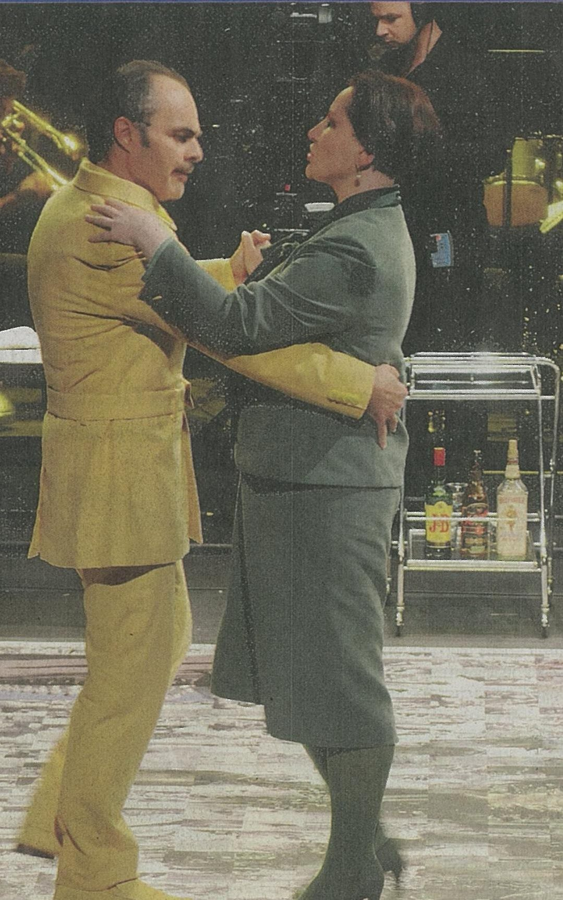

·  Ircam — Centre PompidouGRAMET2G — Théâtre de GennevilliersFestival ManiFeste Esteban BuchAntoine GindtLéo Warynski — Sebastian Rivas — Esteban Buch — Antoine Gindt — Léo Warynski — Philippe Béziat Laura Plas — La TerrasseFranck Madlener — IrcamBruno Serrou